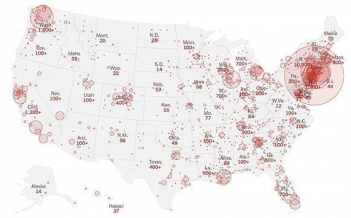

纽约告急！美国确诊数据翻番，“富人优先检测”引发巨大争议
原文链接 备份链接 美国约翰斯•霍普金斯大学统计显示，截至当地时间21日13时，美国新冠肺炎确诊病例已超过2万例，死亡278例。三天之内，全美确诊病例从1万例增至2万例。而更有研究分析，美国疫情的峰值最早可能要到5月份才能到来。 美国确 …
记者 ：潘金花
“
美国新冠病例已突破2.6万，加州、纽约州、伊利诺伊州、康涅狄格州、新泽西州均已发布“居家令”。
”
根据美国约翰斯·霍普金斯大学的实时统计数据，截至北京时间3月22日10时43分，全球新冠肺炎确诊病例数已达307104例。
其中，美国累计确诊26574例，超过了西班牙的25496例，成为中国、意大利之后，全球累计确诊病例数第三多的国家。此外，美国的累计死亡病例数也达到了307例。
随着疫情在国内蔓延，美国联邦监狱系统在押犯人中已确诊了首例病例，布鲁克林大都会看守所的一名犯人新冠病毒检测呈阳性。此前，已有两名监狱局工作人员被确诊为新冠病例，一人在堪萨斯州，另一人在得克萨斯州。
在美国国会众议院有两人确诊后，美军中央司令部也出现了确诊病例，是一名15日从海外返回美国的海军士兵。该士兵此后在家中进行预防性隔离，18日出现症状并接受检测，20日结果呈阳性。
副总统彭斯21日晚也与妻子一同接受了检测。此前，副总统办公室有一名职员检测呈阳性。但彭斯表示，他和总统特朗普与这名职员均无直接接触。据美国有线电视新闻网（CNN）当天报道，彭斯夫妇的检测结果均呈阴性。
为阻止疫情进一步扩散，各州政府正在陆续发布“居家令”。据路透社报道，截至周六，美国已有约四分之一人口被要求闭店和居家。
继加州、纽约州、伊利诺伊州和康涅狄格州之后，新泽西州21日也发布了“居家令”，从当晚9点开始，要求全州约900万居民取消非必要外出，非必要商业设施无限期关闭。这意味着在美国约3.2亿人口中，已有约7500万人面临“居家令”，占比23.4%。
特朗普13日已宣布了“国家紧急状态”，以应对新冠肺炎疫情。但他在20日表示，并未考虑从联邦政府层面发布全美范围的“居家令”，称“一些地区疫情并不严重”。

截至当地时间21日晚9时，美国各州的确诊病例情况 数据来源：纽约时报
目前，美国40%以上的确诊病例都来自纽约州，该州也是美国首个确诊人数破万的州。州长科莫表示，截至当地时间周六上午，纽约州的确诊人数已达到10365例，其中纽约市的病例也已飙升至6211例。
特朗普20日已宣布纽约州出现“重大灾难”。科莫表示，确诊人数破万的原因在于纽约州使用了超过加州等近2倍的测试量，截至周六上午，该州已测试了超过45000例疑似病例。
尽管境内确诊病例数已居全球第三，但美国的检测速度仍然相对落后。根据美国疾控中心（CDC）官方网站公布的最新数据，截至20日晚，CDC实验室和地方公共卫生实验室仅共检测了66371份样本。
由于患者数量过多、检测能力不足，一些地区只能调整策略，不鼓励没有症状的人进行测试。而据《洛杉矶时报》20日报道，加州洛杉矶县卫生官员甚至已建议医生放弃检测疑似患者，只有在检测呈阳性能对改变治疗方式起到一定作用的情况下，才能给患者做检测。
针对国内检测效率低的情况，白宫已在周六承诺，将在月底前发放2700万检测试剂盒。美国食品药品监督管理局（FDA）也已紧急批准使用一种新的快速检测试剂盒，可以在约45分钟内检测到新冠病毒。
此外，为应对疫情造成的经济冲击，美国国会也正在讨论规模达1万亿美元的一揽子刺激计划，包括向美国民众直接派发现金等。参议院共和党领袖麦康奈尔称，两党代表在该计划的谈判上已取得重要进展。据路透社报道，预计麦康奈尔将在周一发起投票。
未经授权 禁止转载

原文链接 备份链接 美国约翰斯•霍普金斯大学统计显示，截至当地时间21日13时，美国新冠肺炎确诊病例已超过2万例，死亡278例。三天之内，全美确诊病例从1万例增至2万例。而更有研究分析，美国疫情的峰值最早可能要到5月份才能到来。 美国确 …
原文链接 备份链接 图片来源：Wikimedia Commons 记者：肖恩 “ 有专家认为，检测人数少是美国目前确诊病例不多的原因。 ” 疑似首例新冠肺炎社区传播病例让美国提高了警惕，疾病控制与预防中心（CDC）也为此修改检测标准。但 …
原文链接 备份链接 国内出现首例境外输入关联病例。美国单日新增超过7000。德国病死率不到0.4% 文 |**《财经》数据研究员 徐进 ** 图 |《财经》视觉中心 编辑 |** 郝洲** 一、国内出现首例境外输入关联病例 图1 今日国 …
原文链接 备份链接 叶青武汉日记：帮助武汉的另外一群人——外省护工 5280 来源：正和岛 作者：叶青 03-21正在打榜，当前第2 [ 中国企业家杂志 - - …
原文链接 备份链接 图片来源：IC Photo “ 全球新冠肺炎疫情播报，持续更新。 ” （本文持续更新中。点击左下角阅读原文，实时跟踪国际疫情动态。文中段首所示时间为本文更新时间。） 全球 0800【全球疫情汇总】 据新浪实时统计，截 …